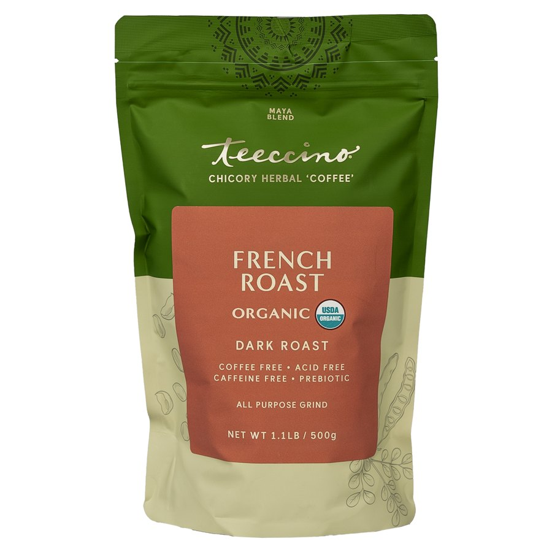
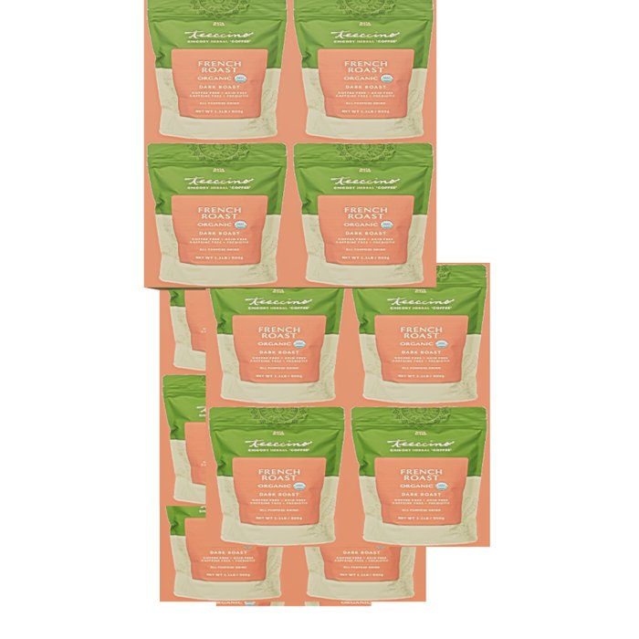
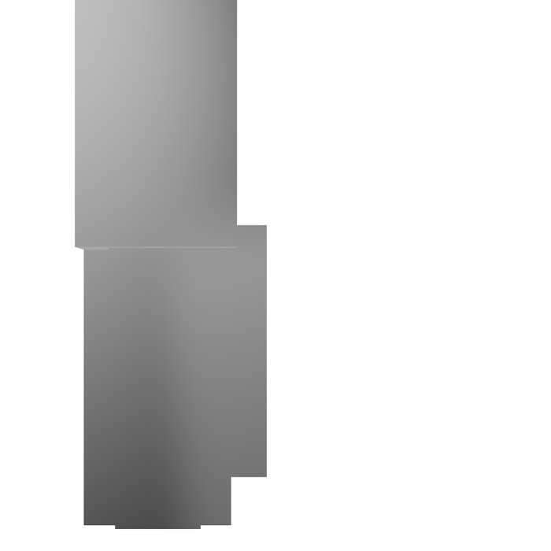

One reference photo → a 1139-line procedural Three.js factory, rendered live below. Drag to orbit. Run 2026-08-05 by AgentSmith.

extrude or plane-card came out as a card, so there is no pouch volume at
all: no pillow bulge, no gusset, no side creases. Straight-on it can pass for a moment; a few
degrees of rotation ends that.#40600E
#C2BD93
#B5654A.textureProjection.repeat [2,2]
each slab is wallpapered with a 2×2 grid of tiny French Roast bags — visible on the still below.validate_sculpt_spec.py --strict-quality
returned PASS / exit 0 on this. The gate checks the spec is richly described, not that the
render resembles anything — likeness lives in a separate 5–8 cycle vision loop (~80–180k tokens).materials[].albedo.map from the spec and regenerating leaves the photograph fully
intact, because a second copy lives at materials[].referencePbr.maps.albedo
(middle button — the spec edit looks like it worked and changes nothing). Strip
referencePbr as well and you get the genuinely photo-free build (third button) — which
then FAILS --strict-quality with "material 'base' needs usable referencePbr
extracted from source pixels." The gate requires the field that keeps the photo in.
